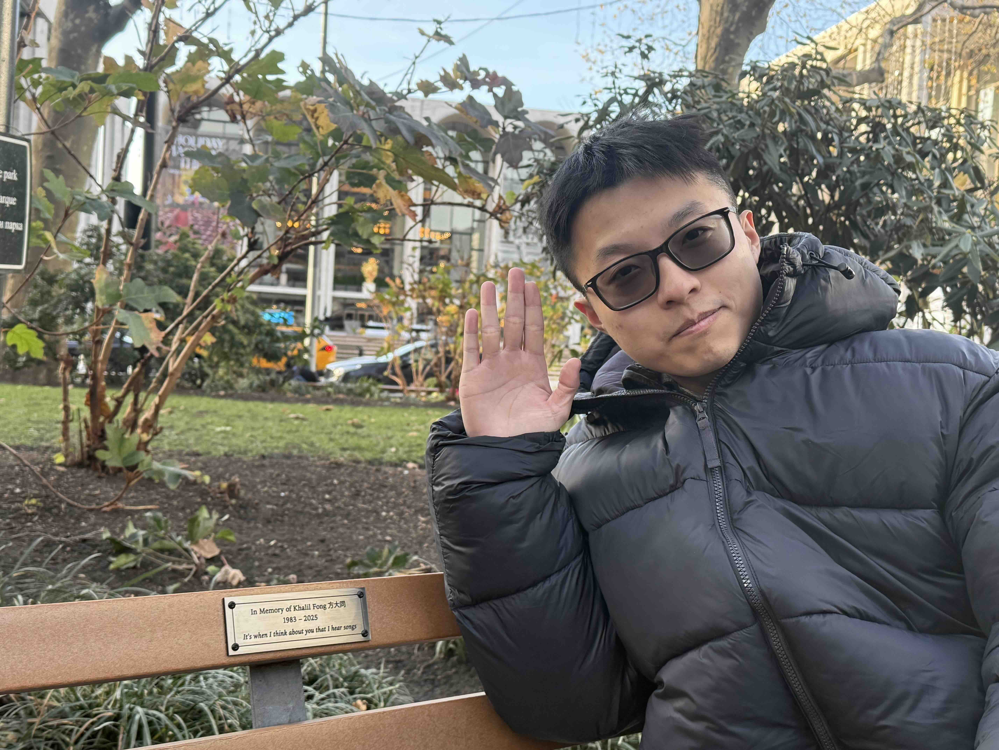

Yu Luo
About Me
-
My official name is Yu Luo. "Yu" is pronounced like "Yü".
You are welcome to call me Joey (my generation name is Zhao, and my parents initially intended to name me Zhaoyu Luo).
-
I am currently (05/03/2026) the record keeper for 204.
-
I am a fifth-year Ph.D. student in Mathematics at the University of Wisconsin-Madison.
Here is my CV and my
ORCID.
Contact: (firstname)(lastname) [at] mit [dot] edu
-
My research interests are in arithmetic algebraic geometry, with a primary focus on
the geometric and arithmetic aspects of Shimura varieties.
-
Starting in July 2026, I will be a C. L. E. Moore instructor at Math Department at Massachusetts Institute of Technology.
Papers
See also my arXiv.
-
(with Michael Rapoport and Wei Zhang)
More regular formal moduli spaces and arithmetic transfer conjectures:
the ramified quadratic case
, 2025, 98 pp.
Submitted.
-
Kudla--Rapoport conjecture for unramified maximal parahoric level
, 2025, 54 pp.
Submitted.
-
(with Andreas Mihatsch and Zhiyu Zhang)
Unitary Shimura varieties at ramified primes and arithmetic transfer
, 2025, 73 pp.
Submitted.
-
(with Qiao He and Yousheng Shi)
The basic locus of ramified unitary Rapoport–Zink spaces
at maximal vertex level
, 2025, 54 pp.
Submitted.
-
(with Qiao He and Yousheng Shi)
Regular models of ramified unitary Shimura varieties
at maximal parahoric level
, 2024, 47 pp.
Submitted.
-
On the moduli description of ramified unitary local models
of signature \((n-1,1)\)
, 2024.
Mathematische Annalen (2025), 78 pp.
Photo
